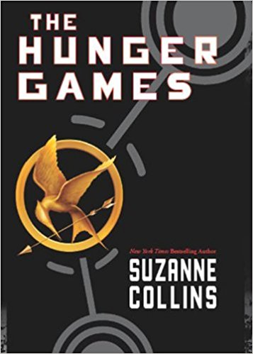
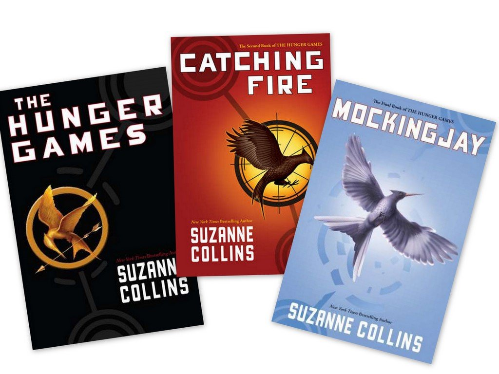
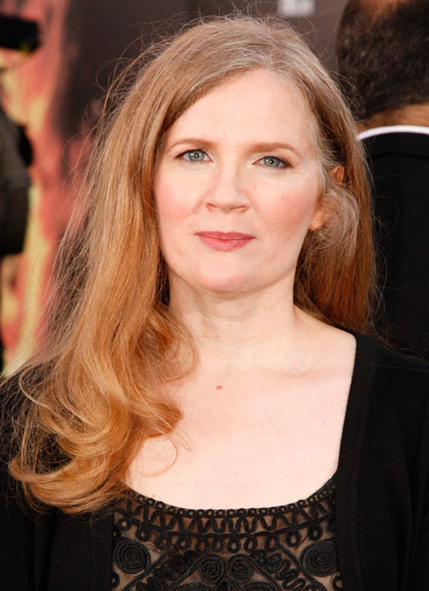

The Hunger Games begins on the day of the reaping in District 12. Katniss Everdeen, the story's 16-year-old narrator, sets out to meet her friend Gale so they can do some hunting and gathering before the reaping that afternoon. As Katniss makes her way from her home to the Meadow and, finally, to the woods, where people of the district are forbidden to go, we learn about Katniss' life in the impoverished part of her district, the Seam, and her family. She thinks about her sister Prim, who is 4 years younger, and her mother, both of whom have depended upon Katniss for survival ever since Katniss' father died in a mine explosion when she was 11.
The reaping is a nerve-wracking time because it determines which boy and girl, ages 12 to 18, will serve as the district's tributes in the Hunger Games. Two tributes are drawn in each of the 12 districts, and those tributes are sent to an arena where they fight until only one tribute remains alive. The victor gets to return home, and the victor's district is showered with gifts — namely food. The Games, put on by the Capitol, are meant to punish the 12 districts of Panem as well as to remind them of the Dark Days and how the 13th district was obliterated for its uprising against the tyrannical and cruel Capitol.

Against all odds, Prim's name is selected at the reaping. Katniss volunteers to take the place of her younger sister and becomes District 12's girl tribute for the 74th Hunger Games. Peeta Mellark, a boy Katniss' age and the son of the baker, is selected as the other tribute. She remembers Peeta and the kindness he demonstrated toward her when they were children, giving her a burnt piece of bread so that she wouldn't starve. Peeta's selection doesn't bode well for Katniss, who feels that she owes Peeta for saving her life when they were children, which is inconvenient considering she's now expected to kill him in the Hunger Games.
Before she leaves, Katniss says goodbye to her mother and Prim; to Madge, the mayor's daughter who gives her the mockingjay pin, a recurring symbol in the novel; to Peeta's father the baker; and to Gale, for whom her feelings are already conflicted, wavering between friendship and love. Katniss and Peeta ride the train to the Capitol. On the train, Katniss experiences luxury like she's never known and gets to eat the richest, most decadent food. They both get to know Effie Trinket, their escort, and Haymitch Abernathy, their drunk mentor and the lone surviving Hunger Games winner from their district who, after seeing that Katniss and Peeta have some fight in them, promises he will sober up enough to help them survive the Games.
After they arrive at the Training Center, Katniss and Peeta meet their stylists. Katniss is pleasantly surprised when she meets Cinna, a young man who dresses simply and wears very little makeup compared with the other stylists. In a strategy that has never been used before, Katniss and Peeta are presented as a pair during the opening ceremonies. They race through the Capitol in a chariot holding hands, their outfits blazing in fake flames, earning Katniss her nickname "girl on fire." Their entrance becomes the highlight of the opening ceremonies.
After the ceremonies, the tributes begin their training. Haymitch coaches Katniss and Peeta together, per their request, and instructs them to keep their biggest strengths a secret from the other tributes. For Katniss, this means staying away from archery. After many years of hunting game in the woods, her prowess with the bow and arrow are unrivaled. The Gamemakers reward her skills, and her feistiness, with a score of 11 out of 12 during her private session with them. Peeta's biggest asset is his strength, so he stays away from weight lifting while he's around the other tributes. Haymitch tells them to remain together at all times, too. They are to appear inseparable, which, as the training goes on, becomes increasingly tiring for Katniss, who can't decide whether Peeta's kindness and compliments are genuine or simply a part of a scheme for winning the Games.
Born in Hartford, Connecticut, in 1962, Suzanne Collins was the daughter of an Air Force pilot, and her family moved several times when she was young. After proving herself as a talented children's television writer, Collins published her debut book, Gregor the Overlander, the first book of The Underland Chronicles. In 2008, the first book of The Hunger Games series was published. Her trilogy of Hunger Game books went on to become a motion picture series starring Jennifer Lawrence as Katniss Everdeen. The youngest of four children, Suzanne Collins was born on August 10, 1962, in Hartford, Connecticut. The daughter of an Air Force officer, Collins moved a considerable amount during her childhood, living in places like New York City and Brussels. For the Collins family, history was an immensely important topic. Much of that was driven by Collins' father, who taught history at the college level and was open with his kids about his military experience, including his deployment to Vietnam.
